SYNESTHETIC FLAVOR ACROSS CULTURES.
Different sensory languages.
One human experience.
From Taiwan to Thailand to Japan, flavor expresses culture, memory, daily rituals, and emotion. Different ingredients, traditions, and moments—yet all speak to what it means to be human.
- Cultural Taste
- Sensory Science
- Experience Design
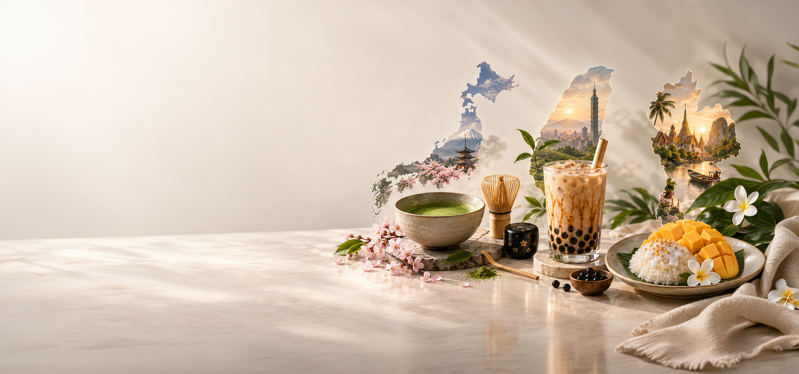
TAIWAN
Playful Taste. Layered Joy.
In Taiwan, bubble milk tea is part of everyday life. It’s the drink people pick up on the way to school, carry between errands, and share while walking through neighborhood streets and night markets.
More than a beverage, it reflects the rhythm of local life — quick visits to tea shops, small moments with friends, and the comfort of something familiar. In one cup, it carries the warmth, energy and togetherness of daily life in Taiwan.
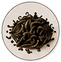
Fresh Milk 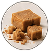
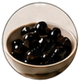
Syrup
Where taste becomes
fun, memory and comfort.
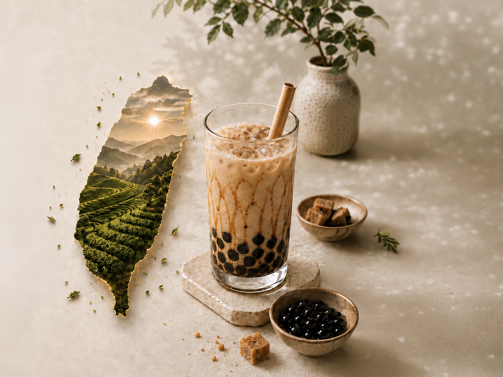
THAILAND
Vibrant Taste. Awakened Senses.
In Thailand, mango sticky rice is more than a dessert — it’s a part of everyday life.
When mango season arrives, you’ll see it everywhere: sold by street vendors, enjoyed in local markets, shared with family at home.
It’s a simple combination of glutinous rice, coconut milk and mango — made with familiar ingredients, prepared with care, and enjoyed together.
More than a sweet treat, it carries the warmth of the season, the joy of daily moments, and the spirit of Thai life.
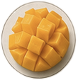
Glutinous Rice Coconut Milk 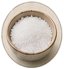
Salt Crispy Mung Beans
Where contrast becomes pleasure.
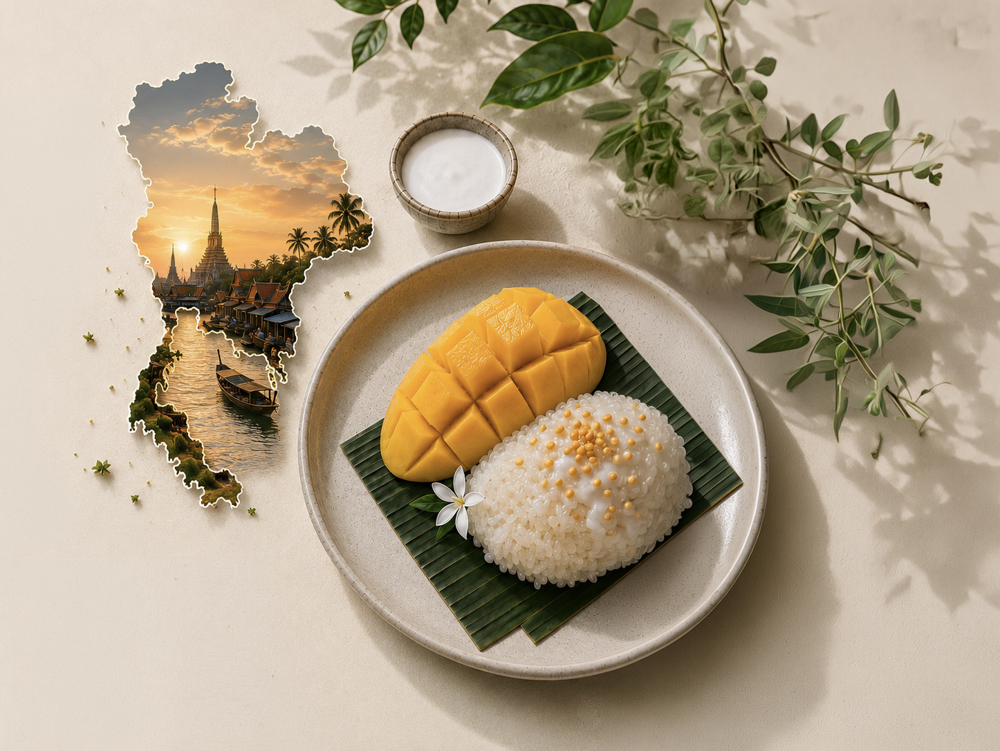
JAPAN
Quiet Flavors. Deep Feelings.
In Japan, tea is woven into everyday life— a moment of pause, connection, and care.
A stop at a wagashi shop in the afternoon.
A quiet seat in a neighborhood tea house.
Gatherings in spring, tea under cherry blossoms.
Hospitality in a warm bowl, shared with heart.
From morning rituals to evening wind-downs, tea brings balance to busy days and meaning to the simple moments.
Through the seasons, in homes and traditions, tea invites us to slow down and appreciate what truly matters.
Matcha 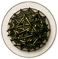
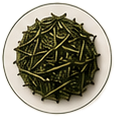
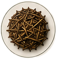
Genmaicha
Where flavor becomes mindfulness.
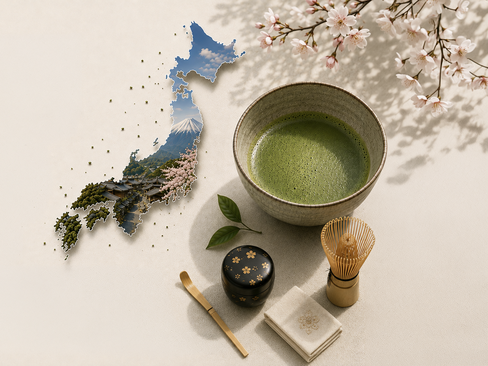
Different cultures.Different sensory languages.One human experience.
TAIWAN
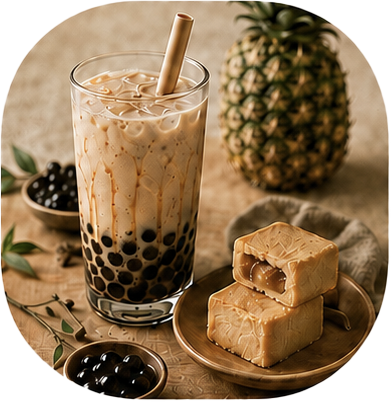
- Playful
- Layered
- Shared
- Comforting
THAILAND
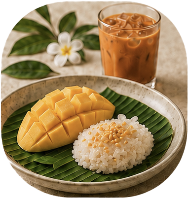
- Vibrant
- Seasonal
- Shared
- Joyful
JAPAN
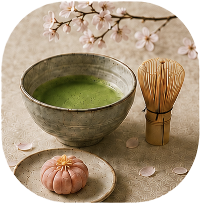
- Quiet
- Refined
- Seasonal
- Mindful
Our differences shape the richness of human experience.